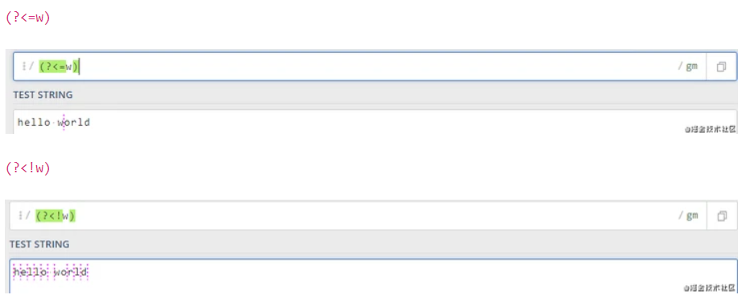
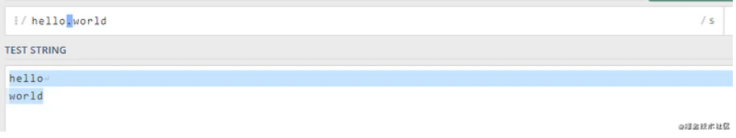

📢 眾所周知， ECMAScript 的迭代是很快的，自ES6(es2015)版本起，跟過去的版本比改動較大，本文集合了 ES6 至 ES11 常用到的特性，包括還在規劃的 ES12，只列舉了大概使用。
⭐⭐ javascript的參數類型:
Boolean Null Undefined Number String Symbol (ES6) BigInt (ES10)
⭐ES6(2015) ⭐let 和 const 在ES6之前，js只有 var let const var 沒有區域變數概念，而 let 和 const 都可做為區域變數。
1 2 3 4 5 6 7 8 9 10 11 12 { var a = 10 ; let b = 20 ; const c = 30 ; b = 30 ; c = 40 ; } console .log(a); console .log(b); console .log(c);
⭐物件 (Class) 在 ES6 之前物件的方式都是與原型鏈相關的，在 ES6 出现了class
1 2 3 4 5 6 7 8 9 10 11 12 13 14 15 16 17 18 function Person (name, age ) this .name = name; this .age = age; } Person.prototype.information = function ( return 'My name is ' + this .name + ', I am ' + this .age; } class Person constructor (name, age ) this .name = name; this .age = age; } information ( return 'My name is ' + this .name + ', I am ' + this .age; } }
⭐箭頭函數（Arrow function） 箭頭函數 表達式的語法比函數表達式 更簡潔，並且沒有自己的this arguments super new.target
1 2 3 4 5 6 7 8 var list = [1 , 2 , 3 , 4 , 5 , 6 , 7 ];var newList = list.map(function (item ) return item * item; }) const list = [1 , 2 , 3 , 4 , 5 , 6 , 7 ];const newList = list.map(item =>
⭐函數參數默認值（Function parameter defaults） 1 2 3 4 5 6 7 8 9 function config (data ) var data = data || 'data is empty' ; } config(0 ); config('' ); const config = (data = 'data is empty' ) => {};
模板字串符（Template string） 1 2 3 4 5 6 7 8 var name = 'testname' ;var age = 24 ;var info = 'My name is ' + this .name + ', I am ' + this .age;const name = 'testname' ;const age = 24 ;const info = `My name is ${name} , I am ${age} ` ;
⭐解構賦值（Destructuring assignment） 我們通過解構賦值，可以將屬性/值從對象/數組中取出,賦值給其它變數。
1 2 3 4 5 6 7 8 9 10 var a = 10 ;var b = 20 ;var temp = a;a = b; b = temp; let a = 10 ;let b = 20 ;[a, b] = [b, a];
⭐模組化（Module） 在ES6前沒有模組化的概念。
1 2 3 4 5 6 7 8 9 10 const { PI } = Math ;exports .area = (r ) => PI * r ** 2 ;exports .circumference = (r ) => 2 * PI * r;const circle = require ('./circle.js' );console .log(`半径为 4 的圆的面积是 ${circle.area(4 )} ` );
擴展操作符（Spread operator） 擴展操作符可以在函數調用/數組構造時, 將數組表達式或者string在語法層面展開；還可以在構造dict類Object, 將Object表達式key-value的方式展開。
1 2 3 4 5 6 7 8 9 10 11 12 13 function sum (x, y, z ) return x + y + z; } var list = [5 , 6 , 7 ];var total = sum.apply(null , list);const sum = (x, y, z ) => x + y + z;const list = [5 , 6 , 7 ];const total = sum(...list);var obj = {'key1' : 'value1' };var array = [...obj];
⭐對象屬性簡寫（Object attribute shorthand） 1 2 3 4 5 6 7 8 9 10 11 12 13 14 15 16 17 18 19 20 21 var cat = 'Miaow' ;var dog = 'Woof' ;var bird = 'Peet peet' ;var someObject = { cat : cat, dog : dog, bird : bird }; let cat = 'Miaow' ;let dog = 'Woof' ;let bird = 'Peet peet' ;let someObject = { cat, dog, bird }; console .log(someObject);
⭐Promise Promise 是ES6提供的一種異步 Promise 有三種狀態，分別是:1.等待中（pending） 2.完成了（resolved） 3.拒絕了（rejected）
1 2 3 4 5 6 7 8 9 10 11 12 13 new Promise ((resolve, reject ) => { resolve('success' ); reject('fail' ); }); new Promise ((resolve, reject ) => { console .log('test1' ); resolve('success' ); }) console .log('test2' );
Promise 實現了鏈式調用，也就是每次調用then 之後返回的都是一個新的 Promise ，因為原來狀態不可變 。then 中 使用了return ，那麼return 的值會被Promise.resolve()
1 2 3 4 5 6 7 8 Promise .resolve(1 ) .then(res => console .log(res); return 2 }) .then(res => console .log(res); });
當然了，Promise 也很好地解决了回調地獄的問題，如下：
1 2 3 4 5 6 7 8 9 10 11 12 13 14 15 16 17 18 19 ajax(url, () => { ajax(url1, () => { ajax(url2, () => { }); }); }); ajax(url) .then(res => console .log(res); return ajax(url1); }).then(res => console .log(res); return ajax(url2); }).then(res =>console .log(res));
⭐for…of for…of 語句再可迭代對象（包括 Array、Map、Set、String、TypedArray、arguments 對象等等）。
1 2 3 4 5 6 7 const array1 = ['one' , 'two' , 'three' ];for (const element of array1) { console .log(element); }
⭐Symbol Symbol 是一種基本數據類型。
1 2 3 4 5 6 7 const symbol1 = Symbol ();const symbol2 = Symbol (42 );const symbol3 = Symbol ('foo' );console .log(typeof symbol1); console .log(symbol3.toString()); console .log(Symbol ('foo' ) === Symbol ('foo' ));
⭐迭代器（Iterator）/ 生成器（Generator） 迭代器可以通過重複調用next()
1 2 3 4 5 6 7 8 9 10 11 12 13 function * makeRangeIterator (start = 0 , end = Infinity , step = 1 ) for (let i = start; i < end; i += step) { yield i; } } var a = makeRangeIterator(1 ,10 ,2 )a.next() a.next() a.next() a.next() a.next() a.next()
Set/WeakSet Set 允許儲存任何類型唯一值，即不含重複
1 2 3 const numbers = [2 ,3 ,4 ,4 ,2 ,3 ,3 ,4 ,4 ,5 ,5 ,6 ,6 ,7 ,5 ,32 ,3 ,4 ,5 ];console .log([...new Set (numbers)]) ;
WeakSet 和Set 類似，但有兩點區別；
WeakSet 只能引用，不能直接放值 WeakSet 是弱引用的意思，如果沒有變量或屬性引用，則會被回收機制回收掉。
1 2 3 4 5 6 7 8 9 10 11 12 13 14 var ws = new WeakSet ();var test1 = {};var test2 = {};ws.add(window ); ws.add(test1); ws.has(window ); ws.has(test2); ws.delete(window ); ws.has(window ); ws.clear();
⭐Map/WeakMap Map 保存鍵值物件(key-value)
1 2 3 4 5 6 7 var myMap = new Map ();myMap.set(NaN , "not a number" ); myMap.get(NaN ); var test1 = Number ("test1value" );myMap.get(test1);
WeakMap 和Map 跟Set和WeakSet區別相似，如下:
1 2 3 4 5 6 7 8 9 10 11 12 13 14 15 16 17 18 19 20 21 22 23 24 25 26 27 var wm1 = new WeakMap (), wm2 = new WeakMap (), wm3 = new WeakMap (); var o1 = {}, o2 = function ( o3 = window ; wm1.set(o1, 37 ); wm1.set(o2, "test" ); wm2.set(o1, o2); wm2.set(o3, undefined ); wm2.set(wm1, wm2); wm1.get(o2); wm2.get(o2); wm2.get(o3); wm1.has(o2); wm2.has(o2); wm2.has(o3); wm3.set(o1, 37 ); wm3.get(o1); wm3.clear(); wm3.get(o1); wm1.has(o1); wm1.delete(o1); wm1.has(o1);
Proxy/Reflect
Proxy 對象用於定義基本操作的自定義行為（如屬性查找，賦值，枚舉，函數調用等）。Reflect 是一個內置的物件。
Proxy Reflect
1 2 3 4 5 6 7 8 9 10 11 12 13 14 15 16 17 18 19 20 21 const observe = (data, callback ) => { return new Proxy (data, { get (target, key ) return Reflect .get(target, key); }, set (target, key, value, proxy ) callback(key, value); target[key] = value; return Reflect .set(target, key, value, proxy); } }) } const FooBar = { open : false };const FooBarObserver = observe(FooBar, (property, value ) => { property === 'open' && value ? console .log('FooBar is open!!!' ) : console .log('keep waiting' ); }); console .log(FooBarObserver.open); FooBarObserver.open = true ;
當然也不是什麼都可以被代理的，如果物件帶有configurable: false writable: false
Regex正規的擴展 1 2 3 4 5 6 7 8 9 10 11 12 13 14 15 16 17 18 19 20 21 22 23 24 25 26 27 28 29 30 31 32 33 34 35 36 /[a-z]/i.test('\u212A' ); /[a-z]/iu .test('\u212A' ); var s = 'aaa_aa_a' ;var r1 = /a+/g ;var r2 = /a+/y ;r1.exec(s); r2.exec(s); r1.exec(s); r2.exec(s); var regex = new RegExp ('xyz' , 'i' );regex.flags var s = '𠮷' /^.$/.test(s) /^.$/u.test(s) /\,/ / / / \,/ /\,/u const RE_TWICE = /^(?<word>[a-z]+)!\k<word>$/ ;RE_TWICE.test('abc!abc' ); RE_TWICE.test('abc!ab' ); const RE_TWICE = /^(?<word>[a-z]+)!\1$/ ;RE_TWICE.test('abc!abc' ); RE_TWICE.test('abc!ab' );
字串方法的改為調用RegExp
String.prototype.match 調用 RegExp.prototype[Symbol.match] String.prototype.replace 調用 RegExp.prototype[Symbol.replace] String.prototype.search 調用 RegExp.prototype[Symbol.search] String.prototype.split 調用 RegExp.prototype[Symbol.split]
正規新增屬性
1 2 3 4 /hello\d/y.sticky /abc/ig.flags
Math物件的擴展
二進表示法:0b或0B開頭表示二進制0bXX或0BXX 二進表示法:0b或0B開頭表示二進制0bXX或0BXX 八進表示法:0o或0O開頭表示二進制0oXX或0OXX Number.EPSILON : 數值最小精度 Number.MIN_SAFE_INTEGER: 最小安全數值(-2^53) Number.MAX_SAFE_INTEGER: 最大安全數值(2^53) Number.parseInt() : 返回轉換值的整數部分 Number.parseFloat() : 返回轉換值的浮點數部分 Number.isFinite() : 是否為有限數值 Number.isNaN() : 是否為NaN Number.isInteger() : 是否為整數 Number.isSafeInteger() : 是否在數值安全範圍內 Math.trunc() : 返回數值整數部分 Math.sign(): 返回數值類型(正數1、負數-1、零0) Math.cbrt() : 返回數值立方根 Math.clz32() : 返回數值的32位無符號整數形式 Math.imul() : 返回兩個數值相乘 Math.fround() : 返回數值的32位單精度浮點數形式 Math.hypot() : 返回所有數值平方和的平方根 Math.expm1() : 返回e^n - 1 Math.log1p(): 返回1 + nMath.log(1 + n) Math.log10() : 返回以10為底的n的對數 Math.log2() : 返回以2為底的n的對數 Math.sinh() : 返回n的雙曲正弦 Math.cosh() : 返回n的雙曲餘弦 Math.tanh() : 返回n的雙曲正切 Math.asinh() : 返回n的反雙曲正弦 Math.acosh() : 返回n的反雙曲餘弦 Math.atanh() : 返回n的反雙曲正切
Array物件的擴展
Array.prototype.from：轉換具有Iterator接口 Array.prototype.of()：轉換一組值為真正數組，返回新數組 Array.prototype.copyWithin()：把指定位置的成員複製到其他位置，返回原數組 Array.prototype.find()：返回第一個符合條件的成員 Array.prototype.findIndex()：返回第一個符合條件的成員索引值 Array.prototype.fill()：根據指定值填充整個數組，返回原數組 Array.prototype.keys()：返回以索引值為遍歷器的對象 Array.prototype.values()：返回以屬性值為遍歷器的對象 Array.prototype.entries()：返回以索引值和屬性值為遍歷器的對象 數組空位：ES6明確將數組空位轉為undefined或empty
ES7(2016) Array.prototype.includes() includes()
1 2 3 4 5 6 const array1 = [1 , 2 , 3 ]console .log(array1.includes(2 )) const pets = ['cat' , 'dog' , 'bat' ]console .log(pets.includes('cat' )) console .log(pets.includes('at' ))
指數操作符 冪運算符 **
1 2 console .log(2 **10 ) console .log(Math .pow(2 , 10 ))
模板字符串（Template string） 自ES7起，帶標籤的模版字面量遵守以下轉義序列的規則：
Unicode字符以”u”開頭，例如 \u00A9 Unicode碼位用”u{}”表示，例如 \u{2F804} 十六進制以”x”開頭，例如 \xA9 八進制以””和數字開頭，例如 \251
⭐ES8(2017) ⭐async/await 雖然Promise 解決了回調地獄的問提，但是鏈式調用太多，則變為另一形式的地獄，所以就有了async/await
1 2 3 4 5 6 7 8 9 10 11 12 13 14 15 16 17 18 19 20 21 22 23 24 25 26 27 28 29 30 31 32 33 34 35 36 fetch('coffee.jpg' ) .then(response => .then(myBlob => let objectURL = URL.createObjectURL(myBlob); let image = document .createElement('img' ); image.src = objectURL; document .body.appendChild(image); }) .catch(e => console .log('There has been a problem with your fetch operation: ' + e.message); }); async function myFetch ( let response = await fetch('coffee.jpg' ); let myBlob = await response.blob(); let objectURL = URL.createObjectURL(myBlob); let image = document .createElement('img' ); image.src = objectURL; document .body.appendChild(image); } myFetch(); async function myFetch ( let response = await fetch('coffee.jpg' ); return await response.blob(); } myFetch().then((blob ) => { let objectURL = URL.createObjectURL(blob); let image = document .createElement('img' ); image.src = objectURL; document .body.appendChild(image); });
Object.values()和Object.entries() 1 2 3 4 5 6 7 8 9 10 11 12 13 14 15 16 17 18 const object1 = { a : 'somestring' , b : 42 , c : false }; console .log(Object .values(object1)); const object1 = { a : 'somestring' , b : 42 }; for (let [key, value] of Object .entries(object1)) { console .log(`${key} : ${value} ` ); }
Object.getOwnPropertyDescriptors() 獲取一個物件的所有自身屬性的描述，如果沒有自身屬性，則返回空值。
String padding 字串前後填充
1 2 3 4 'hello' .padStart(10 ,"*" ); 'hello' .padEnd(10 ,"*" );
函數、參數、列表結尾允許逗號 1 2 3 4 5 6 7 8 9 10 11 12 13 14 15 16 17 18 19 20 21 22 23 function f (p ) function f (p, ) (p) => {} (p,) => {} class C one (a, ) two (a, b, ) } var obj = { one (a, ) two (a, b, ) }; f(p); f(p,); Math .max(10 , 20 );Math .max(10 , 20 ,);
ShareArrayBuffer （因安全問題，暫時在Chrome跟FireFox中被禁用）
Atomics物件 Atomics ShareArrayBuffer 。
ES9(2018) ⭐異步迭代(for await…of) await可以和for…of
1 2 3 4 5 6 7 8 9 10 11 12 13 14 15 async function * asyncGenerator ( var i = 0 ; while (i < 3 ) { yield i++; } } (async function ( for await (num of asyncGenerator()) { console .log(num); } })();
Promise.finally() 當Promise 的狀態變更，不管變為完成了(resolved) 拒絕了(rejected) finally()
1 2 3 4 5 6 7 8 9 10 fetch(url) .then((res ) => { console .log(res); }) .catch((error ) => { console .log(error); }) .finally(() => { console .log('结束' ); });
正規表達式命名捕獲組 在以往的版本裡，JS的正規分組是無法命名的，所以容易混淆。例如下面獲取年月日的例子，很容易讓人搞不清哪個是月份，哪個是年份。
1 2 3 4 5 const matched = /(\d{4})-(\d{2})-(\d{2})/ .exec('2019-01-02' )console .log(matched[0 ]); console .log(matched[1 ]); console .log(matched[2 ]); console .log(matched[3 ]);
正規表達式反向斷言
正規表達式的斷言一共有4 種形式:
(?=pattern) 零寬正向肯定斷言(zero-width positive lookahead assertion)(?!pattern) 零寬正向否定斷言(zero-width negative lookahead assertion)(?<=pattern) 零寬反向肯定斷言(zero-width positive lookbehind assertion)(?<!pattern) 零寬反向否定斷言(zero-width negative lookbehind assertion)

正規表達式s/dotAll模式 正規表達式中點.匹配除rollback的任何單字字符，標記s改變這種行為，允許終止符出現。
1 /hello.world/.test('hello\nworld' );

ES10(2019) Array.flat()和Array.flatMap() 1 2 3 4 5 6 7 8 9 10 var arr1 = [1 , 2 , [3 , 4 ]];var arr2 = [1 , 2 , 3 , 4 ];arr1.flat(Infinity ); arr2.map(x =>2 ]); arr2.flatMap(x =>2 ]); arr2.flatMap(x =>2 ]]);
String.trimXXX() 在ES5中，我們可以通過trim()去掉字串首尾，但無法只去掉單邊。去掉開頭的空格，可以使用trimStart() trimLeft() trimEnd() trimRight()
1 2 3 4 5 6 7 const Str = ' Hello world! ' ;console .log(Str); console .log(Str.trimStart());console .log(Str.trimLeft()); console .log(Str.trimEnd()); console .log(Str.trimRight());
Object.fromEntries() Object.fromEntries() Object.entries()
1 2 3 const map = new Map ([ ['foo' , 'bar' ], ['baz' , 42 ] ]);console .log(Object .fromEntries(map));
Symbol.prototype.description description 是一個只讀 返回Symbol 物件的可選描述字串。與Symbol.prototype.toString()不同的是它不會包含Symbol()的字串。如下：
1 2 3 4 5 6 7 8 9 10 11 12 Symbol ('desc' ).toString(); Symbol ('desc' ).description; Symbol ('' ).description; Symbol ().description; Symbol .iterator.toString(); Symbol .iterator.description; Symbol .for('foo' ).toString(); Symbol .for('foo' ).description;
String.prototype.matchAll matchAll（） 為所有的匹配成功的對象返回一個迭代器
1 2 3 4 5 6 var regexp = /t(e)(st(\d?))/g ;var str = 'test1test2' ;str.match(regexp); str.matchAll(regexp); [...str.matchAll(regexp)]
Function.prototype.toString() 以往版本是去掉空格，但從ES10開始保留空格
1 console .log(Math .abs.toString());
⭐try-catch，可選catch 以往版本中，try-catch的catch需要帶異常參數，但從ES10開始異常參數不是必須的
1 2 3 4 5 6 7 8 9 10 11 12 try { } catch (err) { } try { console .log('Foobar' ) } catch { console .error('Bar' ) }
⭐BigInt BigInt 解決了Number 的不足，BigInt可以表示任意大的整数
1 2 3 4 2 ** 53 === (2 ** 53 + 1 )2 ** 1024
但是在ES10引入BigInt，這個問題便解決了。
所以在BigInt出來之後， javascript的參數類型 便增加到7個:
Boolean Null Undefined Number String Symbol (ES6) BigInt (ES10)
globalThis globalThis this
⭐import() 靜態的**import()語句用於導入由另一個模組導出的綁定，import語句只能在聲明了type=”module” import()，它不需要依賴 type=”module”**的script標籤。
1 2 3 4 5 6 7 8 9 10 11 12 13 const main = document .querySelector("main" );for (const link of document .querySelectorAll("nav > a" )) { link.addEventListener("click" , e => e.preventDefault(); import ('/modules/my-module.js' ) .then(module => module .loadPageInto(main); }) .catch(err => main.textContent = err.message; }); }) }
私有元素與function 1 2 3 4 5 6 7 8 9 10 11 12 13 14 15 16 17 18 19 20 21 22 23 24 25 26 27 28 29 30 31 32 33 34 35 36 37 38 39 40 41 42 43 44 45 46 47 48 49 50 51 52 53 54 55 56 57 58 59 60 class Counter extends HTMLElement get x () { return this .xValue; } set x (value ) { this .xValue = value; window .requestAnimationFrame(this .render.bind(this ));; } clicked ( this .x++;; } constructor ( super (); this .onclick = this .clicked.bind(this ); this .xValue = 0 ; } connectedCallback ( this .render(); } render ( this .textContent = this .x.toString(); } } window .customElements.define('num-counter' , Counter);class Counter extends HTMLElement #xValue = 0 ; get #x ( return #xValue; } set #x (value ) this .#xValue = value; window .requestAnimationFrame(this .#render.bind(this )); } #clicked ( this .#x++; } constructor ( super (); this .onclick = this .#clicked.bind(this ); } connectedCallback ( this .#render(); } #render ( this .textContent = this .#x.toString(); } } window .customElements.define('num-counter' , Counter);
ES11(2020) 空值處理 (Nullish coalescing Operator) 表達式在 ?? undefined null
1 2 3 4 5 6 7 8 9 10 11 12 let user = { u1 : 0 , u2 : false , u3 : null , u4 : undefined , u5 : '' }; let u1 = user.u1 ?? '用戶1' ; let u2 = user.u2 ?? '用戶2' ; let u3 = user.u3 ?? '用戶3' ; let u4 = user.u4 ?? '用戶4' ; let u5 = user.u5 ?? '用戶5' ;
可選鏈（Optional chaining） ?.
1 2 3 4 const name = props && props.user && props.user.info && props.user.info.name;const name = props?.user?.info?.name;
Promise.allSettled 在之前使用 Promise.all 的時候，如果其中某個任務出現異常 reject ，所有任務都會掛掉，Promise直接進入 reject 狀態
1 2 3 4 5 6 7 8 9 10 11 12 13 14 15 16 17 18 19 20 21 22 Promise .all([ Promise .reject({ code : 500 , msg : "服務異常" , }), Promise .resolve({ code : 200 , list : [], }), Promise .resolve({ code : 200 , list : [], }), ]) .then((res ) => { doSomething(res); }) .catch((error ) => { });
而 Promise.allSettled 就是解決這個問題的。
1 2 3 4 5 6 7 8 9 10 11 12 13 14 15 Promise .allSettled([ Promise .reject({code : 500 , msg :'服务异常' }), Promise .resolve({ code : 200 , list : []}), Promise .resolve({code : 200 , list : []})]) ]).then((res ) => { RenderContent(res.filter((el ) => { return el.status !== 'rejected' ; })); });
ES12(2021) String.protype.replaceAll 所有指定字元替換的新方法
1 2 3 4 5 6 7 8 const teststring = "test+test+test+" ;const teststringaddR = fruits.replace(/\+/g , "R" );console .log(teststringaddR); const teststring = "test+test+test+" ;const teststringaddR = fruits.replaceAll("+" , "R" );console .log(teststringaddR);
Promise.any Promise.any 方法和Promise.race 類似——只要給定的迭代中的一個 promise 成功，就採用第一個 promise 的值做為它的返回值，但與 Promise.race 的不同之處在於——它會等到所有 promise 都失敗之後，才返回失敗的值
1 2 3 4 5 6 7 8 9 10 11 12 13 14 15 16 17 18 19 const myFetch = (url ) => setTimeout (() => fetch(url), Math .floor(Math .random() * 3000 )); const promises = [ myFetch("/endpoint-1" ), myFetch("/endpoint-2" ), myFetch("/endpoint-3" ), ]; Promise .any(promises) .then(console .log) .catch(console .error); try { const first = await Promise .any(promises); console .log(first); } catch (error) { console .log(error); }
WeakRef
可以通過 WeakRef 類來給某個對象創建一個弱引用 可以通過FinalizationRegistry 類，在某個對象被垃圾回收之後，執行一些自定義方法
通過弱引用一個對象，可以讓該對象在沒有其它引用的情況下被垃圾回收機制回收。WeakRef 主要用來緩存或映射一些大型物件，當你希望某個物件在不被其它地方引用的情況下及時地被垃圾回收，那麼你就可以使用它。
邏輯賦值運算符 結合了邏輯運算符（&&，||，??）和賦值表達式
1 2 3 4 5 6 7 8 9 10 11 a ||= b a = a || (a = b) a &&= b a = a && (a = b) a ??= b a = a ?? (a = b)
數字分隔符 可以在數字間創建可視化分隔符，通過_下劃線
1 2 3 4 5 const money = 1_000_000_000 ;const money = 1000000000 ;1_000_000_000 === 1000000000 ;
參考網站:
https://segmentfault.com/a/1190000023062765 https://xjl271314.github.io/docs/es/ https://segmentfault.com/a/1190000039272641